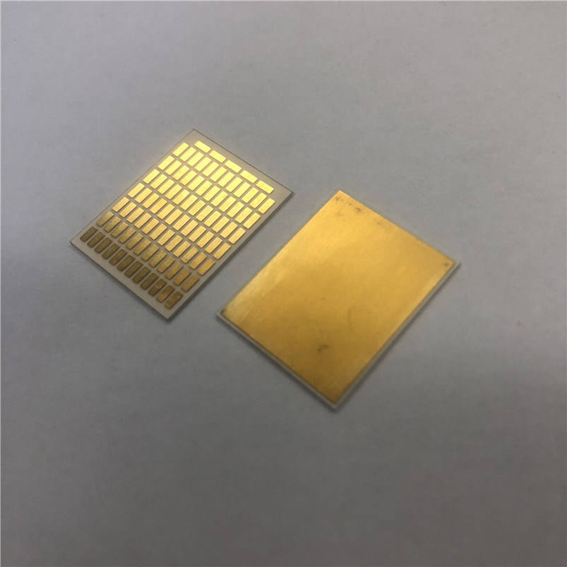
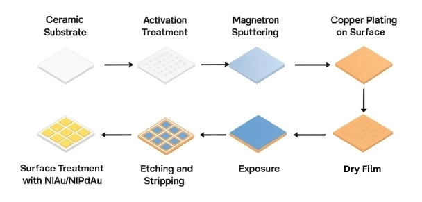
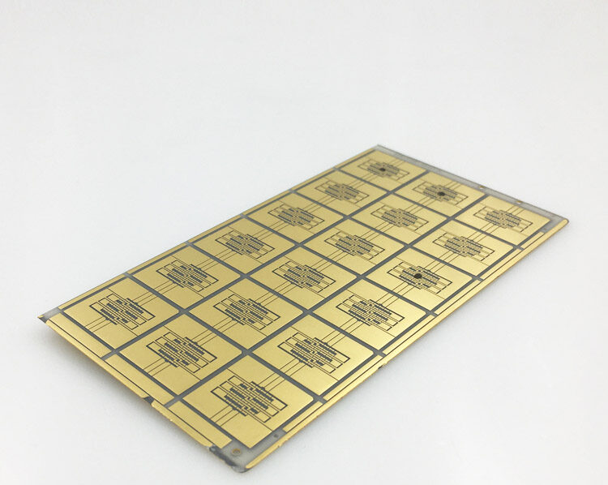
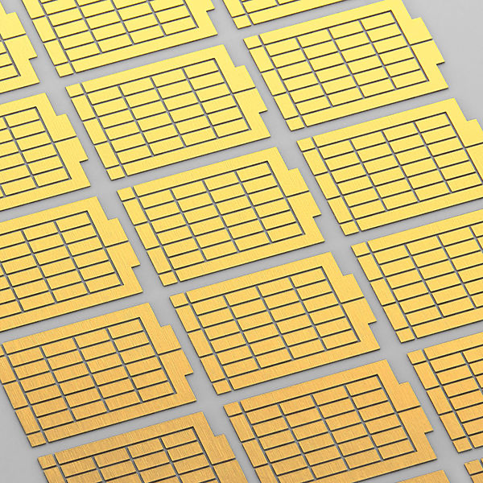
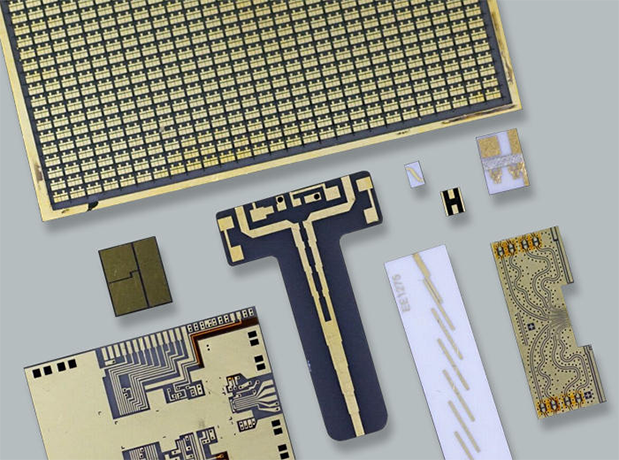

Direct Plated Copper (DPC) Ceramic Substrates
Direct Plated Copper (DPC) technology: combining thin-film magnetron sputtering, semiconductor-grade photolithography, and pattern electroplating on polished ceramic wafers. Engineered for high-frequency RF, laser diode submounts, thermoelectric cooling (TEC), and high-density microelectronic packaging.

Fine-Line Metallization on Ceramic
Vertical sidewall profile with pure oxygen-free electroplated copper, plated through-holes (PTH), and wire-bondable ENIG/ENEPIG finishes.
How DPC Ceramic Substrates Are Manufactured
Unlike Direct Bonded Copper (DBC) which laminates thick foils at high temperatures, or thick-film paste screen printing which suffers from glass binder resistance and rough edges, Direct Plated Copper (DPC) is a semi-additive thin-film process derived from semiconductor fabrication.
The ceramic substrate (typically 96% / 99.6% Alumina or Aluminum Nitride) is first laser-drilled for via holes and lapped to optical flatness. Inside a high-vacuum PVD chamber, a nanometer-thin Titanium (Ti) adhesion layer and Copper (Cu) seed layer are magnetron-sputtered across the entire surface and via walls.
In a Class 1,000 cleanroom, dry-film photoresist is laminated, exposed with laser direct imaging, and developed. Copper is then electroplated into the open channels, building dense, pure copper circuits from 10 µm up to 100+ µm while simultaneously plating or filling the vias. After stripping the photoresist, differential micro-etching removes the seed layer without degrading trace fidelity.
DPC Process Architecture

Ti/Cu Seed
20µm Resist
Dense Cu
Vertical Traces
DPC Ceramic Substrate Specifications
Verified manufacturing tolerances and material specifications for engineering design and RFQ planning.
Physical & Material Parameters
| Ceramic Materials | Alumina (Al₂O₃ 96%, 99.6%), Aluminum Nitride (AlN ≥170 W/m·K), Silicon Nitride (Si₃N₄) |
| Ceramic Substrate Thickness | 0.20 mm, 0.25 mm (recommended for filled vias), 0.38 mm, 0.50 mm, 0.635 mm, 1.0 mm |
| Copper Thickness Options | 10 µm – 105 µm (1 oz to 3 oz standard; custom up to 140 µm). Dual copper thickness supported on same substrate. |
| Metal-to-Edge Distance (Exclusion) | 100 µm (0.10 mm) standard | Advanced capability down to 60 µm (0.06 mm) |
| Array Panel Spacing & Border | 0.20 mm inter-unit gap | 4.0 mm production frame waste margin |
| Layer Alignment Precision | 15 µm cumulative error across 2", 3", and 4" substrates |
| Surface Roughness (Ra) | Lapped: <0.3 µm | Polished: <0.05 µm |
| Substrate Thickness Tolerance | ±0.03 mm (Precision ground: ±0.015 mm) |
Electrical & Thermal Performance
| Thermal Conductivity (AlN) | 170 – 200 W/m·K (Through-thickness) |
| Min. Line Width / Spacing | 20 µm / 20 µm (thin Cu) | 0.08 mm / 0.08 mm (for 1 oz / 35 µm Cu) |
| Line Width Accuracy | 0.02 mm (20 µm) with ±0.01 mm tolerance |
| Through-Wafer Via Current Load | ~2.4A capacity (Dual 1 oz vias in parallel for ≤2A designs) | 105 µm Cu for single via carrying 2A+ |
| Solid Copper Via Filling | 0.075 mm – 0.10 mm ⌀ (Substrate <0.40 mm for void-free filling; Cu >20 µm) |
| Via Spacing & Pad Placement | Via spacing >120 µm | Max 2 vias per single pad (min. 0.15 mm edge-to-edge) |
| Surface Finish & Inspection | ENIG (~85°C simultaneous plating, SPC controlled, XRF 5-point test ±1.5-2.0 µm), ENEPIG |
| Interfacial Bond Strength | >30 – 40 MPa (Ti/Cu Sputtered Interphase) |
DPC Engineering Design Considerations
To ensure optimal yields and rapid turnaround, we encourage engineering teams to consider standard Design-For-Manufacturability (DFM) rules during CAD layout:
- Single Unit Metal-to-Edge: Standard minimum distance from patterned metal to substrate edge is 100 µm (0.10 mm). A standard design exclusion of 0.30 mm is well within our stable high-yield window. For ultra-compact packages, our process capability can fabricate down to 60 µm (0.06 mm) edge exclusion.
- Array / Panel Spacing: Spacing between individual units on a multi-up production panel is maintained at 0.20 mm.
- Production Frame Margin: The overall production panel requires a 4.0 mm waste border margin along the perimeter edges for panel clamping and electroplating rails.
- 1 oz (35 µm) Copper Design Rules: Minimum line width / spacing is 0.08 mm / 0.08 mm (80 µm / 80 µm). For ultra-fine thin-film traces (10–25 µm Cu), capability extends down to 20 µm / 20 µm.
- Line Width Accuracy: Nominal line width resolution of 0.02 mm with a tight manufacturing tolerance of ±0.01 mm (±10 µm).
- Layer Alignment Precision: High-precision photolithography alignment maintains a cumulative error of only 15 µm across 2-inch, 3-inch, and 4-inch substrate wafers.
- Dual Copper Thickness Capability: Jimei can provide two distinct copper thicknesses on the same ceramic substrate, enabling fine-pitch impedance-controlled signal lines alongside thick, low-resistance power carrying pads.
- Dual Through-Wafer Via Rule (≤2A): For designs requiring a maximum through-wafer current of 2A, it is recommended to use dual through-wafer vias with 1 oz (35 µm) Cu thickness connected in parallel, delivering a total carrying capacity of approximately 2.4A.
- Single Via Rule (2A+): If a single through-wafer via design is required to carry 2A or more, the copper plating thickness must be increased to 105 µm (3 oz).
- Simultaneous Plating: Via metallization and circuit side/top side plating are electroplated simultaneously in the same chemical bath, ensuring uniform grain structure and reliable atomic bonding.
- Metrology: Via copper thickness and plating coverage are verified through destructive metallographic micro-sectioning and 4-wire electrical resistance testing.
- Substrate Thickness Limit: For solid copper filled vias, the recommended substrate thickness is below 0.40 mm (0.20 mm or 0.25 mm is strongly recommended; 0.38 mm is supported). Board thickness greater than 0.40 mm may result in internal micro-voids, creating a risk of blistering and bulging at high assembly temperatures (>350°C).
- Via Dimensions: Recommended via diameter for filled vias is 0.075 mm – 0.10 mm (75 µm – 100 µm), with minimum copper barrel thickness >20 µm.
- Via Spacing & Pitch: Via spacing should be designed >120 µm. For larger 0.20 mm vias, center-to-center pitch must be >400 µm, with via-to-edge distance >40 µm.
- Pad Placement: A maximum of two vias should be placed on a single copper pad, maintaining a minimum distance of 0.15 mm (150 µm) between the edges of the via holes.
- Filler Metrology: Copper thickness on both front and back sides of via fillers is measured simultaneously.
- Plating Sequence: Nickel (Ni) electroplating is conducted first, followed by Immersion Gold (Au) plating after all copper metallization is completed.
- Simultaneous Double-Sided Processing: Both front and back sides are electroplated simultaneously at an operating bath temperature of approximately 85°C.
- Statistical Process Control (SPC): Plating bath chemical concentrations, pH, and metallic ion replenishment for nickel and gold are strictly maintained under real-time SPC control.
- X-Ray 5-Point Inspection: An advanced X-ray fluorescence (XRF) instrument measures individual Ni and Au thicknesses across a standardized 5-point panel grid, verifying compliance with the ±1.5 to 2.0 µm tolerance window.
- Shipment Inspection Reports: A complete Certificate of Analysis (COA) / Shipment Inspection Test Report is provided with each production delivery detailing dimensional, metallization, and plating test results.
Real DPC Substrate Product Gallery



Primary Applications for DPC Ceramic Substrates
Where tight line tolerances, high thermal dissipation, and low RF dielectric loss are essential.
RF & Microwave Circuits
Substrates for millimeter-wave components, planar filters, attenuators, and power splitters—leveraging sharp vertical sidewalls and tight line tolerances (±10 µm) for controlled-impedance transmission lines.
Laser Diode Submounts
AlN DPC submounts matching the CTE of GaAs and InP laser chips. Built-in solder stop dams and AuSn eutectic pads provide optimal thermal spreading.
Thermoelectric Coolers (TEC)
Direct Plated Copper ceramic plates with custom solder pads engineered for high-density Peltier cooling modules and infrared sensors.
High-Power & UV-C LEDs
Direct thermal dissipation through filled copper vias ensures maximum lumen maintenance and reliability for industrial and medical UV curing LEDs.
Interdigital Electrodes (IDEs)
High-resolution micro-electrode finger patterns (20µm) on Al₂O₃/AlN for chemical, biological, and gas sensor transducers.
Encapsulation Dam Substrates
Electroplated 3D copper encapsulation dams containing optical silicone or epoxy potting resin for power modules and sensor packaging.
When to Choose DPC vs. Other Technologies
| Design Requirement | DPC (Direct Plated Copper) | DBC (Direct Bonded Copper) |
|---|---|---|
| Line / Space Resolution | 20 µm / 20 µm (Ultra-Fine) | 150 µm / 150 µm |
| Trace Sidewall Profile | Near-vertical (Photolithography) | Etched trapezoidal slope |
| Compatible Ceramics | Al₂O₃, AlN, Si₃N₄ | Al₂O₃ (Alumina) |
| Max Current Carrying | Moderate (10A – 50A) | High (>50A – 150A) |
| Thermal Via Capability | Laser-drilled, solid filled | Not standard / Complex |
| Surface Finishes | ENIG, ENEPIG, Immersion Ag/Sn | OSP or ENIG as required |
| Ideal Operating Domain | RF, Sensors, Lasers, TEC, MCM | IGBTs, Standard EV inverters |
Request a DPC Ceramic Substrate Quotation
Submit your design parameters or Gerber/DXF drawings. Our engineering team reviews specifications and responds within 24 hours.